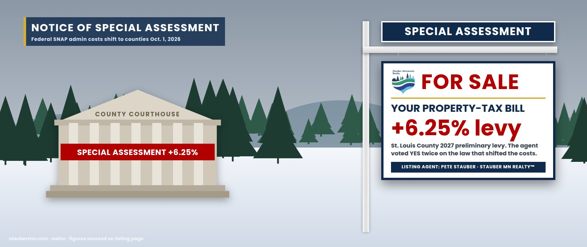

The Special Assessment — Every Homestead, Cabin and Farm in the 8th District
Your county courthouse · St. Louis County preliminary 2027 levy · final vote Dec. 15, 2026
The federal government found savings. In your mailbox.
In real estate we call this a special assessment: the association votes for a project, and every owner gets the bill. On July 3, 2025, the House approved the One Big Beautiful Bill 218–214, and listing agent Pete Stauber voted yes, as he had on the first House version, 215–214 (Roll Calls 145 & 190). His office said the law would “protect taxpayer dollars by removing waste, fraud, and abuse from federal programs.”
Here is how the protection is delivered. In Minnesota, counties run SNAP and Medicaid eligibility on the state’s behalf. Beginning October 1, 2026, the federal government stops paying half of SNAP’s administrative costs and starts paying a quarter. Minnesota loses about $37 million a year. Beginning in fiscal 2028, the state must also cover part of SNAP benefits themselves — an estimated $97 million a year. And in 2027 come Medicaid work-reporting rules and eligibility checks every six months, which the state estimated would cost local, state and tribal governments about $165 million a year to administer.
The costs land on the one tax the federal government doesn’t collect: yours. In September, the St. Louis County Board capped its 2027 levy increase at 6.25% — $12.67 million — while eliminating or reassigning 31 positions and absorbing $12.1 million in costs. Board Chair Mike Jugovich put it plainly: “federal and state governments were shifting new costs to us.”
The waste, fraud and abuse has been located. It is on your property-tax statement, due in May.
How a federal law becomes a county levy
Every vote below is from the official House Clerk record.
| Date | Event | Details | Price |
|---|---|---|---|
| May 22, 2025 | Offer accepted | House passes the One Big Beautiful Bill, 215–214. Agent Stauber votes YEA: the bill is “protecting Medicaid for the most vulnerable.”Roll Call 145 | 1-vote margin |
| July 2, 2025 | Appraisal | St. Louis County estimates the law’s SNAP (>$10M) and Medicaid ($6.4M) cost shifts equal a 9.5% levy increase; 40,000 residents (about 20%) are on Medicaid.Northern News Now | 9.5% equiv. |
| July 3, 2025 | Closed | Final passage, 218–214. Agent Stauber votes YEA. Signed July 4.Roll Call 190 | Signed |
| Aug 2025 | Assessment notice | Association of Minnesota Counties: SNAP shifts cost St. Louis County $5,280,167 a year — a 2.93% levy — for 11,556 monthly cases.AMC | $5.28M |
| Oct 1, 2025 | Amenity removed | SNAP-Ed nutrition education eliminated ($9.5M a year in Minnesota).MN DCYF | −$9.5M |
| Dec 2025 | Levies rise | All 87 Minnesota counties raise property-tax levies for 2026, averaging 8%+; counties cite federal SNAP and Medicaid changes.MPR News | +8% avg. |
| Sept 2026 | Assessment set | St. Louis County caps its 2027 levy at +6.25% ($12.67M; total $215M); 31 positions eliminated or reassigned.Mesabi Tribune / Northern News Now | +6.25% |
| Oct 1, 2026 | Effective | Federal share of SNAP administration falls from 50% to 25%; Minnesota loses ~$37M a year.MN DCYF | −$37M / yr |
| Jan 2027 | Next assessment | Medicaid work-reporting rules and six-month eligibility checks begin; ~$165M a year in new administrative costs statewide.MN DHS via Axios | ~$165M / yr |
| Oct 1, 2027 | Next assessment | State share of SNAP benefits begins in fiscal 2028; Minnesota estimate ~$97M a year.MN DCYF | ~$97M / yr |
The county’s books
Where the invoice goes
Your county can raise the levy, cut services, or both. St. Louis County is doing both.
| Line item | Who used to pay | Who pays now | Starts | Minnesota amount |
|---|---|---|---|---|
| SNAP administration | 50% federal | 75% state & counties | Oct 1, 2026 | ~$37M / yr |
| SNAP benefits | 100% federal | Up to 15% state, based on error rates | FY 2028 | ~$97M / yr |
| Medicaid work reporting & 6-month checks | Did not exist | State, counties, tribes | Jan 2027 | ~$165M / yr |
| SNAP-Ed nutrition education | Federal | Eliminated | Oct 1, 2025 | −$9.5M / yr |
| Coverage for people who lose Medicaid | Medicaid | Hospitals’ charity care → everyone’s bills | 2027– | +$269M / yr charity care |
Sources: Minnesota Department of Children, Youth, and Families; Minnesota Department of Human Services via Axios (July 29, 2025); Minnesota Hospital Association. State estimates, subject to change as rules are finalized.
“Real tax relief” — itemized
What the agent says
“This big, beautiful bill will put working Minnesotans first by providing real tax relief for families and job creators, protecting Medicaid for the most vulnerable…”Rep. Pete Stauber, May 22, 2025
“Protect taxpayer dollars by removing waste, fraud, and abuse from federal programs, so they can better serve the American people.”Stauber press release on final passage, July 3, 2025
What the public record shows
- Voted YEA on both House votes for the law (Roll Calls 145 and 190)
- The law cuts the federal share of SNAP administration from 50% to 25% on Oct. 1, 2026
- St. Louis County said the shifts equal a 9.5% levy increase; its 2027 levy is up to +6.25%
- The county is cutting or reassigning 31 positions to hold the line
- Chair Jugovich: “federal and state governments were shifting new costs to us”
Similar properties in this neighborhood
Public records cited in this listing
- House Clerk, Roll Call 145 (May 22, 2025): H.R. 1 passage, 215-214; Stauber Yea
- House Clerk, Roll Call 190 (July 3, 2025): H.R. 1 final, 218-214; Stauber Yea
- Stauber press release, May 22, 2025 (“protecting Medicaid for the most vulnerable”)
- Stauber press release, July 3, 2025 (“removing waste, fraud, and abuse”)
- Minnesota DCYF, “Federal SNAP provisions in the 2025 reconciliation bill: Impacts on Minnesota”
- Association of Minnesota Counties, “Counting the Cost” (SNAP & Medicaid county impacts)
- Northern News Now, “St. Louis County highlights impacts of federal budget bill” (July 2, 2025)
- Northern News Now, “St. Louis County caps property tax levy at 6.25%” (Sept. 23, 2026)
- Mesabi Tribune, “County Board gives initial approval to 6.25% 2027 tax levy”
- MPR News, “Federal SNAP, Medicaid changes force Minnesota counties to raise property taxes” (Dec. 9, 2025)
- MPR News, “Thousands of Minnesotans to lose SNAP benefits under new eligibility rules” (Feb. 20, 2026)
- Axios Twin Cities, “140K Minnesotans could lose Medicaid under new law” (July 29, 2025)
- Minnesota Hospital Association, Medicaid in Minnesota